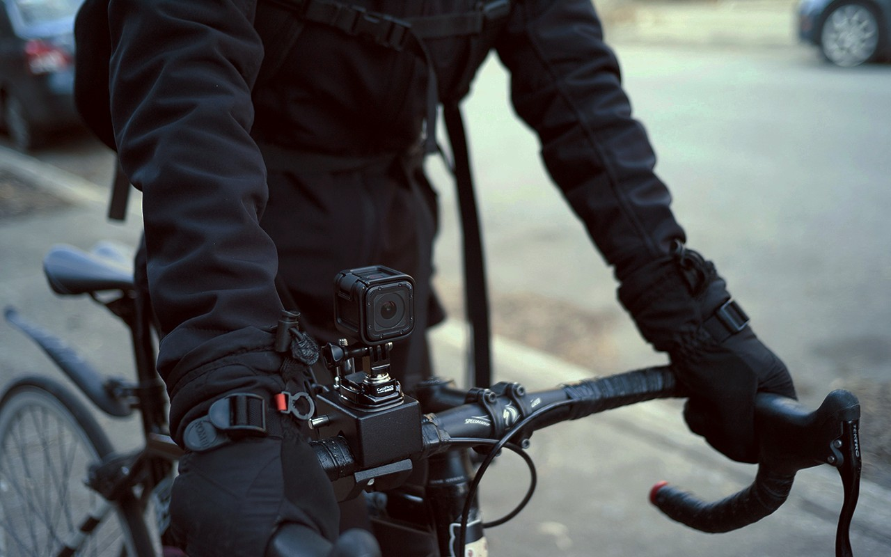

documenting
We use a GoPro Session4 as well as a Sony a6000 to film our travels. The GoPro has the advantage of being light and waterproof - making for a perfect everyday-carry camera. Shooting with the SLR requires more planning as it can only used in fair weather.
We film as much, and as often as we can. At the end of each month, we watch our footage and write a summary of that month's events. We plan the monthly videos ahead, and we gather footage based on what is needed. While one is busy recording the narration, the other writes music. The two tracks are then edited together (using Blender) with the collected footage. We have our respective tasks when it comes time to edit, but both of us take part in the filming.
In rough weather, we prioritize our own safety above all, and so we rarely have footage of rough seas.